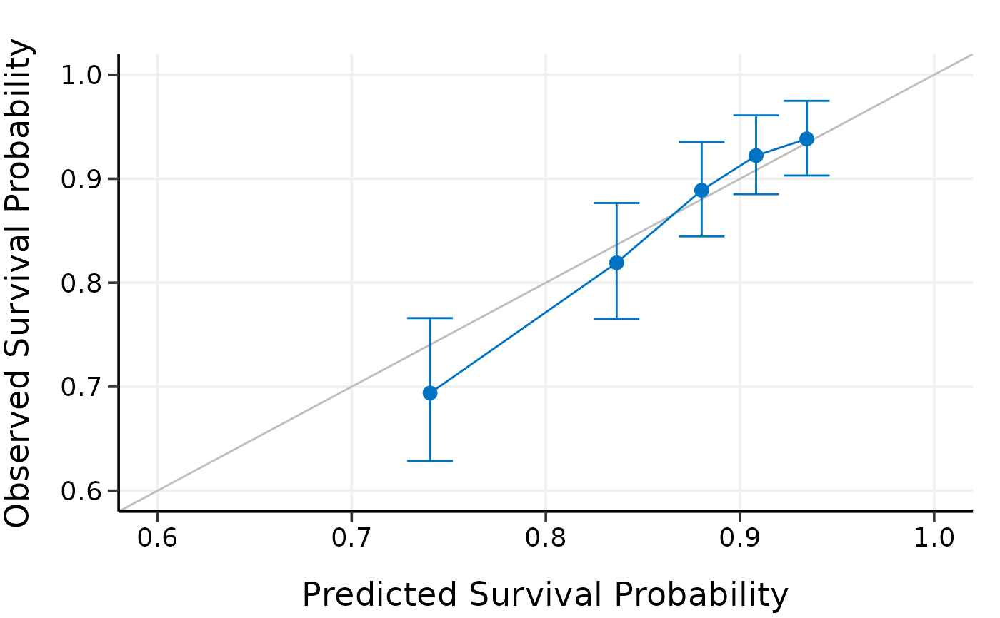

Externally calibrate high-dimensional Cox models
Source:R/4_4_calibrate_external.R
calibrate_external.RdExternally calibrate high-dimensional Cox models
Arguments
- object
Model object fitted by
hdnom::fit_*().- x
Matrix of training data used for fitting the model.
- time
Survival time of the training data. Must be of the same length with the number of rows as
x.- event
Status indicator of the training data, normally 0 = alive, 1 = dead. Must be of the same length with the number of rows as
x.- x_new
Matrix of predictors for the external validation data.
- time_new
Survival time of the external validation data. Must be of the same length with the number of rows as
x_new.- event_new
Status indicator of the external validation data, normally 0 = alive, 1 = dead. Must be of the same length with the number of rows as
x_new.- pred.at
Time point at which external calibration should take place.
- ngroup
Number of groups to be formed for external calibration.
Examples
library("survival")
# Load imputed SMART data
data(smart)
# Use the first 1000 samples as training data
# (the data used for internal validation)
x <- as.matrix(smart[, -c(1, 2)])[1:1000, ]
time <- smart$TEVENT[1:1000]
event <- smart$EVENT[1:1000]
# Take the next 1000 samples as external calibration data
# In practice, usually use data collected in other studies
x_new <- as.matrix(smart[, -c(1, 2)])[1001:2000, ]
time_new <- smart$TEVENT[1001:2000]
event_new <- smart$EVENT[1001:2000]
# Fit Cox model with lasso penalty
fit <- fit_lasso(
x, Surv(time, event),
nfolds = 5, rule = "lambda.1se", seed = 11
)
# External calibration
cal.ext <- calibrate_external(
fit, x, time, event,
x_new, time_new, event_new,
pred.at = 365 * 5, ngroup = 5
)
print(cal.ext)
#> High-Dimensional Cox Model External Calibration Object
#> Model type: lasso
#> Calibration time point: 1825
#> Number of groups formed for calibration: 5
summary(cal.ext)
#> External Calibration Summary Table
#> Predicted Observed Lower 95% Upper 95%
#> 1 0.7636781 0.6778444 0.6118535 0.7509528
#> 2 0.8292888 0.8558495 0.8064183 0.9083108
#> 3 0.8622023 0.8743564 0.8281000 0.9231966
#> 4 0.8851549 0.9169032 0.8785888 0.9568884
#> 5 0.9084455 0.9429391 0.9085910 0.9785858
plot(cal.ext, xlim = c(0.6, 1), ylim = c(0.6, 1))

# # Test fused lasso, MCP, and Snet models
# data(smart)
# # Use first 500 samples as training data
# # (the data used for internal validation)
# x <- as.matrix(smart[, -c(1, 2)])[1:500, ]
# time <- smart$TEVENT[1:500]
# event <- smart$EVENT[1:500]
#
# # Take 1000 samples as external validation data.
# # In practice, usually use data collected in other studies.
# x_new <- as.matrix(smart[, -c(1, 2)])[1001:2000, ]
# time_new <- smart$TEVENT[1001:2000]
# event_new <- smart$EVENT[1001:2000]
#
# flassofit <- fit_flasso(x, survival::Surv(time, event), nfolds = 5, seed = 11)
# scadfit <- fit_mcp(x, survival::Surv(time, event), nfolds = 5, seed = 11)
# mnetfit <- fit_snet(x, survival::Surv(time, event), nfolds = 5, seed = 11)
#
# cal.ext1 <- calibrate_external(
# flassofit, x, time, event,
# x_new, time_new, event_new,
# pred.at = 365 * 5, ngroup = 5)
#
# cal.ext2 <- calibrate_external(
# scadfit, x, time, event,
# x_new, time_new, event_new,
# pred.at = 365 * 5, ngroup = 5)
#
# cal.ext3 <- calibrate_external(
# mnetfit, x, time, event,
# x_new, time_new, event_new,
# pred.at = 365 * 5, ngroup = 5)
#
# print(cal.ext1)
# summary(cal.ext1)
# plot(cal.ext1)
#
# print(cal.ext2)
# summary(cal.ext2)
# plot(cal.ext2)
#
# print(cal.ext3)
# summary(cal.ext3)
# plot(cal.ext3)